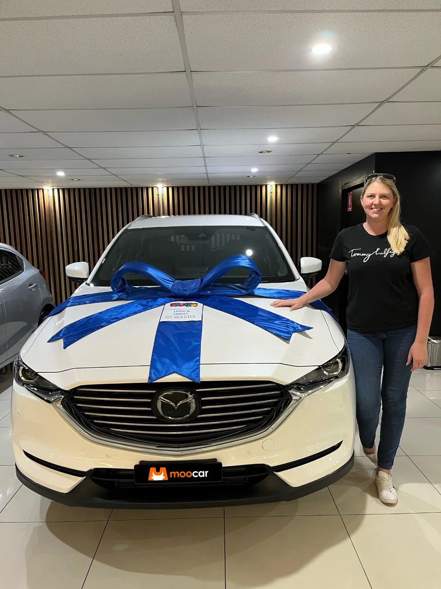

Choose the car
Know the exact new car you’re after? Tell Moocar. Still exploring? Its team can help narrow down the choice.
The process
A straightforward four-step route from the first question to the new-car handover.
Know the exact new car you’re after? Tell Moocar. Still exploring? Its team can help narrow down the choice.
Moocar puts a quote request to its dealer network to compare pricing and availability for your chosen vehicle.
If finance is part of your plan, ask about options suited to your needs and review the terms before committing.
Pick up from the dealership, or arrange delivery to your home or workplace where available.

Manufacturer warranty and servicing arrangements vary by vehicle. Confirm the details of your quote directly with Moocar.
Your next move
Tell Moocar what you have in mind — even if you're still deciding.